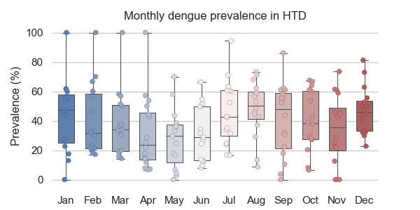
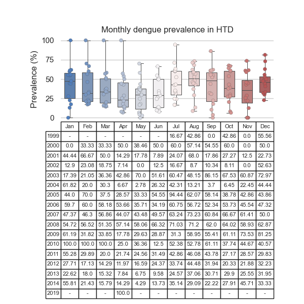
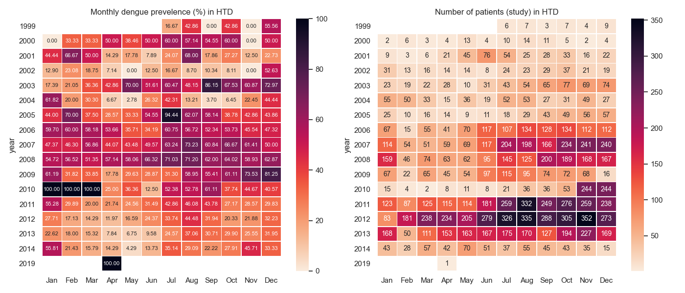
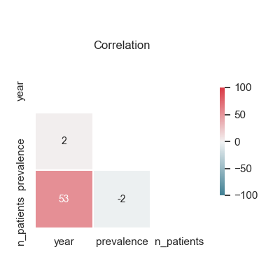

Note
Click here to download the full example code
Yearly monthly prevalence¶
Example using your package
Warning
At the moment a the assumption is that if the pcr_dengue_serotype is present then the patient had dengue. Otherwise, the patient did not suffer dengue. However, the following things should be considered:
Not all datasets had pcr_dengue_serotype variable
The serology results and/or clinical notes need to be incorporated.
14 15 16 17 18 19 20 21 22 23 24 25 26 27 28 29 30 31 32 33 34 35 36 37 38 39 40 41 42 43 44 45 46 47 48 49 50 51 52 53 54 55 56 57 58 59 60 61 62 63 64 65 66 67 68 69 70 71 72 73 74 75 76 77 78 79 80 81 82 83 84 85 86 87 88 89 90 91 92 93 94 95 96 97 98 99 100 101 102 103 104 105 106 107 108 109 110 111 112 113 114 115 116 117 118 119 120 121 | # Libraries
import calendar
import pandas as pd
import numpy as np
import seaborn as sns
import matplotlib.pyplot as plt
# DataBlend library
from datablend.core.repair.correctors import oucru_dengue_interpretation_feature
# Seaborn
sns.set_theme(style="whitegrid")
# ---------------------------------
# Methods
# ---------------------------------
def prevalence(x):
return (np.sum(x) / len(x)) * 100
# ---------------------------------
# Constants
# ---------------------------------
# The data filepath
# The data filepath
path = '../../resources/data/20210601-v0.1/combined/combined_tidy.csv'
# Features
features = ['study_no',
'date',
'dsource',
'pcr_dengue_serotype',
'ns1_interpretation',
'igm_interpretation',
'igg_interpretation']
# ---------------------------------
# Main
# ---------------------------------
# Read data
data = pd.read_csv(path, low_memory=False,
parse_dates=['date'],
usecols=features)
# Format
data = data.convert_dtypes()
data = data[features]
# These datasets do not have pcr_dengue_serotype.
data = data[~data.dsource.isin(['01nva', '42dx'])]
# Add dengue interpretation
data['dengue_interpretation'] = \
oucru_dengue_interpretation_feature(data,
pcr=True, ns1=True, igm=True,
paired_igm_igg=True, default=False)
# Overall outcome for patient
patients = data.groupby('study_no').max()
patients['month'] = patients.date.dt.month
patients['year'] = patients.date.dt.year
# Show
print("\nPatients:")
print(patients)
# Compute prevalence
# ------------------
# Compute prevalence
prevalence = patients.reset_index() \
.groupby(by=['month', 'year']).agg( \
prevalence=('dengue_interpretation', prevalence),
n_patients=('study_no', 'count'))
# Drop extremes
#idxs = prevalence.prevalence.between(0.01, 99.9)
# Clean for plotting
prevalence = prevalence.reset_index()
#prevalence = prevalence[idxs]
# Format month
#prevalence.month = prevalence.month.apply(
# lambda x: calendar.month_abbr[x])
# Create tables
table_prevalence = pd.pivot_table(prevalence,
index=['year'], values='prevalence', columns=['month'])
table_npatients = pd.pivot_table(prevalence,
index=['year'], values='n_patients', columns=['month'])
# Month numbers to abbr
def month_abbr(v):
return [calendar.month_abbr[x] for x in v]
table_prevalence.columns = month_abbr(table_prevalence.columns)
table_npatients.columns = month_abbr(table_npatients.columns)
prevalence.month = month_abbr(prevalence.month)
# Show
print("\n")
print(prevalence)
print("\nPrevalence table:")
print(table_prevalence.round(2))
print("\n#Patients table:")
print(table_npatients.round(0))
|
Out:
Applying... oucru_dengue_interpretation_feature.
Patients:
date dsource pcr_dengue_serotype ns1_interpretation igm_interpretation igg_interpretation dengue_interpretation month year
study_no
06dx-06DXA001 2009-09-01 06dx DENV-1 Positive Positive Positive True 9 2009
06dx-06DXA002 2009-08-31 06dx DENV-1 Positive Positive Positive True 8 2009
06dx-06DXA004 2009-08-10 06dx DENV-1 Positive Positive Positive True 8 2009
06dx-06DXA005 2009-09-04 06dx DENV-1 Positive Positive Positive True 9 2009
06dx-06DXA006 2009-09-01 06dx DENV-2 Positive Positive Positive True 9 2009
... ... ... ... ... ... ... ... ... ...
md-995 2003-07-28 md DENV-2 <NA> <NA> <NA> True 7 2003
md-996 2003-07-25 md <LOD <NA> <NA> <NA> False 7 2003
md-997 2003-07-28 md <LOD <NA> <NA> <NA> False 7 2003
md-998 2003-07-29 md <LOD <NA> <NA> <NA> False 7 2003
md-999 2003-07-29 md DENV-4 <NA> <NA> <NA> True 7 2003
[15657 rows x 9 columns]
month year prevalence n_patients
0 Jan 2000 0.000000 2
1 Jan 2001 44.444444 9
2 Jan 2002 12.903226 31
3 Jan 2003 17.391304 23
4 Jan 2004 61.818182 55
.. ... ... ... ...
182 Dec 2010 40.573770 244
183 Dec 2011 29.831933 238
184 Dec 2012 32.234432 273
185 Dec 2013 31.952663 169
186 Dec 2014 33.333333 15
[187 rows x 4 columns]
Prevalence table:
Jan Feb Mar Apr May Jun Jul Aug Sep Oct Nov Dec
year
1999 NaN NaN NaN NaN NaN NaN 16.67 42.86 0.00 42.86 0.00 55.56
2000 0.00 33.33 33.33 50.00 38.46 50.00 60.00 57.14 54.55 60.00 0.00 50.00
2001 44.44 66.67 50.00 14.29 17.78 7.89 24.07 68.00 17.86 27.27 12.50 22.73
2002 12.90 23.08 18.75 7.14 0.00 12.50 16.67 8.70 10.34 8.11 0.00 52.63
2003 17.39 21.05 36.36 42.86 70.00 51.61 60.47 48.15 86.15 67.53 60.87 72.97
2004 61.82 20.00 30.30 6.67 2.78 26.32 42.31 13.21 3.70 6.45 22.45 44.44
2005 44.00 70.00 37.50 28.57 33.33 54.55 94.44 62.07 58.14 38.78 42.86 43.86
2006 59.70 60.00 58.18 53.66 35.71 34.19 60.75 56.72 52.34 53.73 45.54 47.32
2007 47.37 46.30 56.86 44.07 43.48 49.57 63.24 73.23 60.84 66.67 61.41 50.00
2008 54.72 56.52 51.35 57.14 58.06 66.32 71.03 71.20 62.00 64.02 58.93 62.87
2009 61.19 31.82 33.85 17.78 29.63 28.87 31.30 58.95 55.41 61.11 73.53 81.25
2010 100.00 100.00 100.00 25.00 36.36 12.50 52.38 52.78 61.11 37.74 44.67 40.57
2011 55.28 29.89 20.00 21.74 24.56 31.49 42.86 46.08 43.78 27.17 28.57 29.83
2012 27.71 17.13 14.29 11.97 16.59 24.37 33.74 44.48 31.94 20.33 21.88 32.23
2013 22.62 18.00 15.32 7.84 6.75 9.58 24.57 37.06 30.71 29.90 25.55 31.95
2014 55.81 21.43 15.79 14.29 4.29 13.73 35.14 29.09 22.22 27.91 45.71 33.33
2019 NaN NaN NaN 100.00 NaN NaN NaN NaN NaN NaN NaN NaN
#Patients table:
Jan Feb Mar Apr May Jun Jul Aug Sep Oct Nov Dec
year
1999 NaN NaN NaN NaN NaN NaN 6.0 7.0 3.0 7.0 4.0 9.0
2000 2.0 6.0 3.0 4.0 13.0 4.0 10.0 14.0 11.0 5.0 2.0 4.0
2001 9.0 3.0 6.0 21.0 45.0 76.0 54.0 25.0 28.0 33.0 16.0 22.0
2002 31.0 13.0 16.0 14.0 14.0 8.0 24.0 23.0 29.0 37.0 21.0 19.0
2003 23.0 19.0 22.0 28.0 10.0 31.0 43.0 54.0 65.0 77.0 69.0 74.0
2004 55.0 50.0 33.0 15.0 36.0 19.0 52.0 53.0 27.0 31.0 49.0 27.0
2005 25.0 10.0 16.0 14.0 9.0 11.0 18.0 29.0 43.0 49.0 56.0 57.0
2006 67.0 15.0 55.0 41.0 70.0 117.0 107.0 134.0 128.0 134.0 112.0 112.0
2007 114.0 54.0 51.0 59.0 69.0 117.0 204.0 198.0 166.0 234.0 241.0 240.0
2008 159.0 46.0 74.0 63.0 62.0 95.0 145.0 125.0 200.0 189.0 168.0 167.0
2009 67.0 22.0 65.0 45.0 54.0 97.0 115.0 95.0 74.0 72.0 68.0 16.0
2010 15.0 4.0 2.0 8.0 11.0 8.0 21.0 36.0 36.0 53.0 244.0 244.0
2011 123.0 87.0 125.0 115.0 114.0 181.0 259.0 332.0 249.0 276.0 259.0 238.0
2012 83.0 181.0 238.0 234.0 205.0 279.0 326.0 335.0 288.0 305.0 352.0 273.0
2013 168.0 50.0 111.0 153.0 163.0 167.0 175.0 170.0 127.0 194.0 227.0 169.0
2014 43.0 28.0 57.0 42.0 70.0 51.0 37.0 55.0 45.0 43.0 35.0 15.0
2019 NaN NaN NaN 1.0 NaN NaN NaN NaN NaN NaN NaN NaN
Lets plot the boxplot with the monthly dengue prevalence per
year. In addition, let’s add the prevalence values in a table
below.
129 130 131 132 133 134 135 136 137 138 139 140 141 142 143 144 145 146 147 148 149 150 | # --------------------------
# Plot boxplot
# --------------------------
# Initialize the matplotlib figure
f, ax = plt.subplots(figsize=(6, 3))
# Draw boxplot
sns.boxplot(x="month", y="prevalence",
data=prevalence, whis=[0, 100], width=.6,
linewidth=0.75, palette="vlag")
# Draw each observation
sns.stripplot(x="month", y="prevalence",
data=prevalence, dodge=True,
linewidth=0.2, palette='vlag')
# Sns plot config
sns.despine(left=True, bottom=True)
# Add a legend and informative axis label
ax.set(xlabel="", ylabel="Prevalence (%)",
title="Monthly dengue prevalence in HTD")
|

Out:
[Text(0.5, 0.24999999999999467, ''), Text(30.75, 0.5, 'Prevalence (%)'), Text(0.5, 1.0, 'Monthly dengue prevalence in HTD')]
Let’s add the prevalence values in a table below.
155 156 157 158 159 160 161 162 163 164 165 166 167 168 169 170 171 172 173 174 175 176 177 178 179 180 181 182 183 184 185 186 187 188 189 190 191 192 193 194 195 | # ----------------------
# Plot boxplot and table
# ----------------------
# Initialize the matplotlib figure
f, ax = plt.subplots(figsize=(6, 6))
# Draw boxplot
sns.boxplot(x="month", y="prevalence",
data=prevalence, whis=[0, 100], width=.6,
linewidth=0.75, palette="vlag")
# Draw each observation
sns.stripplot(x="month", y="prevalence",
data=prevalence, dodge=True,
linewidth=0.2, palette='vlag')
# Sns plot config
sns.despine(left=True, bottom=True)
# Create aux table for visualization
aux = table_prevalence.round(2)\
.astype(str).replace({'nan': '-'})
# Draw table
table = plt.table(cellText=aux.to_numpy(),
rowLabels=aux.index,
colLabels=aux.columns,
cellLoc='center')
table.auto_set_font_size(False)
table.set_fontsize(8)
table.scale(1, 3.2)
# Sns config
sns.despine(left=True, bottom=True)
# Add a legend and informative axis label
ax.set(xlabel='', ylabel='Prevalence (%)', xticks=[],
title="Monthly dengue prevalence in HTD")
# Adjust subplots
plt.subplots_adjust(left=0.2, bottom=0.6)
|

Lets plot the heatmaps with (i) the monthly dengue prevalence
per year (ii) the number of patients with/without dengue used
to compute such prevalence.
202 203 204 205 206 207 208 209 210 211 212 213 214 215 216 217 218 219 220 221 222 223 224 225 226 227 228 229 230 231 232 233 234 235 236 237 238 239 240 241 242 243 244 245 246 247 248 249 250 | # -----------------------
# Plot heatmaps
# ----------------------
# Create figure
f, ax = plt.subplots(1, 2, figsize=(14, 6))
ax = ax.flatten()
# Draw a heatmap with the numeric values in each cell
sns.heatmap(table_prevalence, annot=True, fmt='.2f',
annot_kws={'fontsize': 8}, linewidths=.5, ax=ax[0],
cmap=sns.cm.rocket_r)
# Configure axes
ax[0].set(title="Monthly dengue prevelence (%) in HTD")
# Draw a heatmap with the numeric values in each cell
sns.heatmap(table_npatients, annot=True, fmt='.0f',
annot_kws={'fontsize': 10}, linewidths=.5, ax=ax[1],
cmap=sns.cm.rocket_r)
# Configure axes
ax[1].set(title="Number of patients (study) in HTD")
# Adjust layout
plt.tight_layout()
# ----------------
# Plot correlation
# ----------------
# Create figure
f, ax = plt.subplots(1, 1, figsize=(4, 4))
# Palette
cmap = sns.diverging_palette(220, 10, as_cmap=True)
# Mask
mask = np.triu(np.ones_like(prevalence.corr(), dtype=np.bool))
# Draw heatmap
sns.heatmap(prevalence.corr()*100, cmap=cmap, center=0,
mask=mask, vmax=100, vmin=-100, square=True, linewidths=0.5,
cbar_kws={'shrink':.5}, annot=True, fmt=".0f",
annot_kws={"size": 10})
# Configure axes
ax.set(title="Correlation")
# Show
plt.show()
|


Out:
C:\Users\kelda\Desktop\repositories\github\vital-oucru-clinical\main\examples\prevalence\plot_prevalence_monthly.py:238: DeprecationWarning: `np.bool` is a deprecated alias for the builtin `bool`. To silence this warning, use `bool` by itself. Doing this will not modify any behavior and is safe. If you specifically wanted the numpy scalar type, use `np.bool_` here.
Deprecated in NumPy 1.20; for more details and guidance: https://numpy.org/devdocs/release/1.20.0-notes.html#deprecations
mask = np.triu(np.ones_like(prevalence.corr(), dtype=np.bool))
Total running time of the script: ( 0 minutes 8.571 seconds)